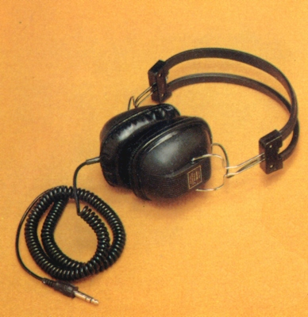

RH-630

■価格 2,900円■型式 ダイナミック型■振動板 90�o■インピーダンス■再生周波数帯域 50-18,000Hz■許容入力 500mW■感度■コード 3m カールコード■重量 350g（コード含まず）/500g（コード含む？）■発売 1971〜73年■販売終了 1976年頃■備考 価格は1973年頃のもの、1974年頃は3,500円波数帯域 20-19,000Hzとする資料あり
ローテルのインデックスへ